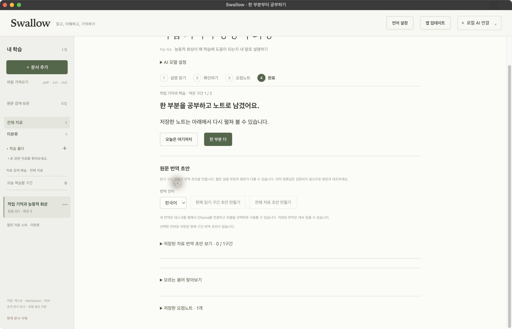
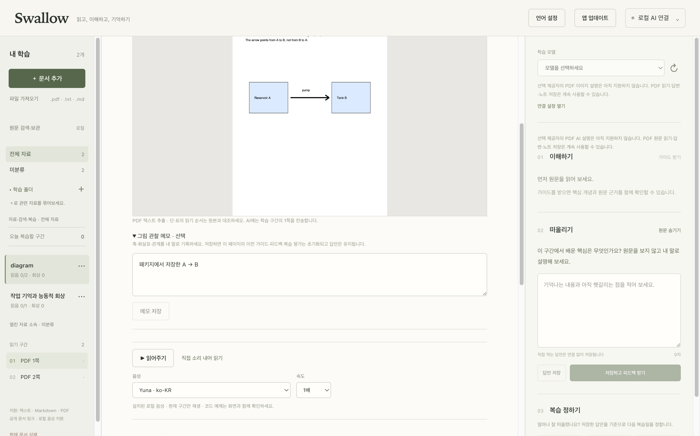
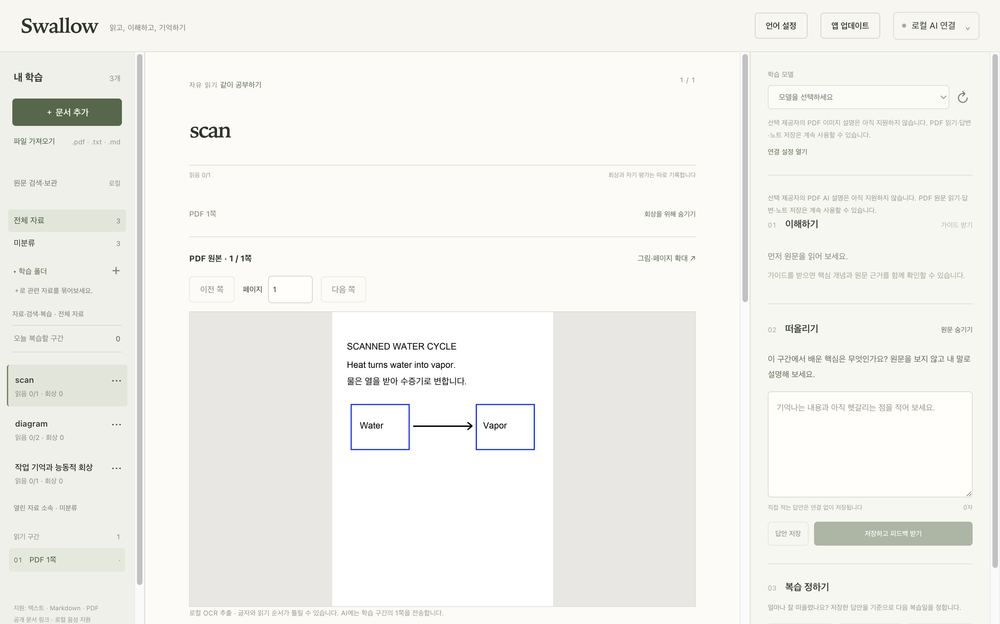

모든 기능 무료 · 오픈소스
읽어야 하는데,
눈에 들어오지 않을 때.
문서, 논문, 책.
시작이 어려운 날을 위한
작은 읽기 도구.
한 부분을 읽고, 내 말로 답하고, 노트와 복습까지.
회원가입이나 AI 연결 없이, 앱에 들어 있는 짧은 예제로 시작하세요.
Windows 11 · Intel/AMD x64 / macOS 15 이상 · Apple Silicon (M1 이후)
Windows·Mac 0.1.2-beta.1 보안 패치 · ChatGPT 구독 연결 방법 보기 ↓
Windows 무서명 베타 · Mac Developer ID 미서명·미공증 베타. 지원 범위와 설치 안내

작게 시작하는 방법
짧은 예제로
첫 학습을 해봐요.
예제의 한 부분을 읽어요.
첫 화면에서 자료 가져오기 버튼 아래의 짧은 예제 문서로 시작하기를 누르세요. 공부 시작을 누르고 이번 부분 원문 보기를 펼쳐 읽습니다.
내 말로 답해봐요.
한 가지 질문에 답해보기를 누르고 내 답변에 한 문장으로 적으세요. 답변 저장하고 요점노트 보기를 눌러 넘어갑니다.
요점노트를 남겨요.
미리보기 아래로 내려가 요점노트 저장을 누르세요. 저장한 요점노트 · 1개가 보이면 첫 학습을 마친 거예요.
로그인이나 AI 연결 없이 첫 학습을 시작할 수 있어요.
읽던 자료 그대로
내 자료를 가져오면,
공부할 자리가 생깁니다.
텍스트·Markdown·PDF와 공개 문서 링크를 한곳에서 읽습니다. 원문 옆에 질문과 기록을 두고, 폴더와 검색으로 다시 찾으세요. 읽던 위치와 노트는 다음 학습으로 이어집니다.
- 모든 기능 무료
- Swallow 가입·결제 없이 사용하세요. 선택한 외부 AI의 이용 조건과 구독 사용량은 별도로 적용됩니다. 자체 작성 코드와 문서는 MIT 라이선스로 공개합니다.
- 읽고, 듣고
- 원문 읽기와 OS의 로컬 음성. PDF 보기·메모와 스캔 문서의 한글·영문 OCR.
- 내 PC에 기록
- 원문·답변·요점노트를 기기에 저장합니다. AI 연결 없이도 읽기·답변·노트·복습을 이어갑니다.
- Ollama 로컬 AI
- 같은 PC의 텍스트 모델로 설명·용어 풀이·답변 피드백·번역 초안을 요청하세요. Swallow의 유료 AI 구독이나 외부 API 키는 필요 없습니다.
Ollama와 로컬 모델은 별도로 준비합니다. 지원 버전·모델 조건은 로컬 AI 안내를 확인하세요. 모델 다운로드·웹 문서 가져오기에는 인터넷이 필요하고, AI·OCR 결과는 원문과 대조해야 합니다. 자료는 앱 자체에서 암호화하지 않으므로 저장·백업 안내도 확인해 주세요.


원문 옆에서 생각을 이어가요.
그림과 도표가 있는 자료도 PDF 화면으로 확인합니다.


이미지 속 문장도 읽을 수 있게.
인식된 텍스트는 원문과 대조해 주세요. 문서 상태에 따라 오류가 생길 수 있어요.
Windows·Mac 베타 · 선택 기능
기존 ChatGPT 구독으로,
읽던 부분을 설명받으세요.
Windows·Mac v0.1.2-beta.1에서 OpenAI 공식 로그인으로 연결합니다. API 키를 입력하거나 웹앱에 요청문을 복사할 필요 없이 Swallow 안에서 설명·피드백·번역 초안을 요청할 수 있습니다.
AI 연결에서 시작해요.
상단 AI 연결 → ChatGPT 구독 연결 · 베타에서 데이터 전송·사용량·계정 안내를 읽고 동의합니다.
공식 페이지에서 로그인해요.
Continue with ChatGPT를 누르고 OpenAI 페이지에서 구독 사용을 허용합니다. OS 보안 확인 창은 앱 이름을 확인하고 직접 처리하세요. Windows는 계정 보호, Mac은 키체인을 사용합니다.
모델을 골라 설명을 요청해요.
학습 화면의 모델 설정에서 · ChatGPT 모델을 선택합니다. 다시 실행한 뒤에는 AI 연결 → ChatGPT 모델 확인으로 저장된 연결을 복원하세요.
Swallow는 무료입니다. 사용 자격·모델·한도는 계정과 OpenAI 정책에 따라 달라지며, 기존 구독 허용량이나 ChatGPT 설정에서 허용한 크레딧을 사용할 수 있습니다. 사용량 관리에서 한도·접근 권한을 확인하세요. 자동 결제나 유료 API 전환은 하지 않습니다.
보내는 자료와 계정 제한을 확인하세요.
선택한 원문과 필요한 맥락·질문·답안이 OpenAI로 전송됩니다. 한 번의 동작이 여러 요청을 사용할 수 있으며 AI 결과는 원문과 대조해야 합니다.
약관 위반·오남용 시 앱 접근 차단 또는 계정 정지·종료가 발생할 수 있습니다. 공식 연결도 접근 지속이나 무제한 사용을 보장하지 않습니다. Gemini·Claude 구독 연결은 제공하지 않습니다.
Windows에서 시작하기
Windows 베타
다운로드와 설치
Windows 11 · Intel/AMD x64용 보안 패치 베타 0.1.2-beta.1입니다.
Mac 사용자는 Mac 설치 안내로 이동하세요.
설치 관리자 없이 ZIP으로 실행
Windows ARM64·32비트는 지원 대상이 아닙니다. 실행에 Node.js·npm·별도 OCR 도구는 필요하지 않습니다.
- 공식 릴리스에서 앱 ZIP 받기
Windows 공식 릴리스의 Assets에서
Swallow-0.1.2-beta.1-windows-x64-trial-unsigned.zip을 받으세요. Source code ZIP은 앱 설치 파일이 아닙니다. - ZIP 전체를 풀고 실행하기
기존 버전을 교체한다면 앱을 종료하고 데이터 폴더를 먼저 백업하세요. 체크섬을 확인한 뒤 전체를 압축 해제하고, Swallow 폴더의 Swallow.exe를 실행합니다. EXE만 따로 옮기지 마세요.
- 짧은 예제로 첫 학습 시작하기
앱이 열리면 예제 문서로 답변을 적고 요점노트를 저장해 보세요. 첫 학습 순서 보기
코드 서명 없는 베타입니다.
자동 업데이트는 제공하지 않습니다. Windows 정책에 따라 실행이 제한될 수 있습니다. 새 설치본은 Windows CI에서 합성 ChatGPT 연결·OS 암호화·저장/PDF를 확인했습니다. 실제 Windows PC의 ChatGPT 로그인·추론과 스피커·헤드폰 청취는 미확인입니다.
Mac에서 시작하기
Mac 베타
다운로드와 설치
v0.1.2-beta.1 보안 패치입니다. ChatGPT 구독 연결을 제공합니다.
설치 조건과 보안 안내를 읽고 시작해 주세요.
macOS 15 이상 · Apple Silicon
M1 이후 M 시리즈용입니다. Intel Mac용 설치본은 없습니다. 실제 확인 환경은 macOS 15.6.1 / M1 Pro입니다.
- 공식 릴리스에서 DMG 받기
Mac 공식 릴리스의 Assets에서
Swallow-0.1.2-beta.1-macOS-arm64-unsigned.dmg를 받으세요. Source code ZIP은 설치 파일이 아닙니다. - 응용 프로그램 폴더로 복사하기
기존 앱을 교체한다면 ⌘Q로 종료하고 기록을 백업하세요. DMG를 열어 Swallow.app을 Applications 폴더로 드래그합니다.
- 디스크 이미지를 추출하고 실행하기
Finder에서 Swallow 디스크 이미지를 추출한 뒤, 응용 프로그램 폴더의 Swallow를 여세요. Node·npm·Xcode는 필요 없습니다.
- 짧은 예제로 첫 학습 시작하기
앱이 열리면 예제 문서로 답변을 적고 요점노트를 저장해 보세요. 첫 학습 순서 보기
Developer ID 서명·Apple 공증이 없습니다.
Apple이 개발자 신원이나 이 배포본의 악성코드 검사를 확인해 준 버전이 아닙니다. 출처를 확신할 수 없다면 설치를 중단하세요.
“개발자를 확인할 수 없음” 경고가 표시되나요?
공식 릴리스에서 받은 파일인지 확인하세요. 실행을 허용하려면 경고를 닫은 뒤 시스템 설정 → 개인정보 보호 및 보안 → 보안 → 그래도 열기에서 앱 이름이 Swallow인지 확인합니다. 다시 뜨는 창에서도 실행 여부를 직접 판단하세요. 관리되는 Mac에서는 허용이 제한될 수 있습니다.
Apple의 공식 앱 보안 안내 ↗“앱이 손상되었습니다”, “컴퓨터를 손상시킵니다” 또는 악성코드 발견 경고라면 실행을 중단하세요. 공식 릴리스에서 다시 받고 체크섬을 확인해 주세요. 문제가 계속되면 오류 문구와 macOS 버전을 알려주세요. 오류 알려주기
다운로드한 파일 확인하기
같은 릴리스의 SHA256SUMS.txt도 같은 폴더에 받으세요. 기본 다운로드 폴더를 썼다면 터미널에서 아래 명령을 실행합니다.
cd ~/Downloads
shasum -a 256 -c SHA256SUMS.txtDMG 파일명 뒤에 OK가 나와야 합니다. 파일이 다르면 설치하지 마세요. 체크섬은 파일 일치 확인이며 Apple 공증을 대신하지 않습니다.
앞으로의 Swallow
더 많은 기기에서,
더 다양한 AI와.
Windows 베타와 Mac 베타로 시작합니다. 앞으로 iOS·Android로도 작은 시작을 이어갈 수 있도록 지원 범위를 넓혀가겠습니다.
- 플랫폼 확장
- iOS·Android를 플랫폼별 개발과 실행 검증을 거쳐 순차적으로 공개할 예정입니다.
- 확장 기능 검토
- Chrome 확장과 Claude·ChatGPT 플러그인에서 학습 기능을 제공하는 방식을 향후 검토합니다. 지원 방식과 일정은 아직 정하지 않았습니다.
- 공개 안내
- 지원 범위·연결 방식·이용 조건과 데이터 전송 범위는 각 버전 공개 시 GitHub에서 안내하겠습니다.
현재 Windows·Mac 베타는 Ollama와 ChatGPT 구독 연결을 제공합니다. Gemini·Claude 구독 연결은 제공하지 않습니다. 모바일·확장 기능은 향후 검토 항목입니다.
오늘은 한 부분만
작은 시작을,
Swallow와 함께해요.
무엇을 하려다가 어디에서 막혔나요?
GitHub 이슈 또는 이메일 nemory.dev@gmail.com으로 알려주세요.